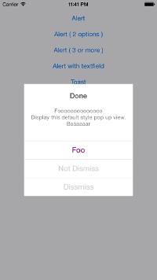

Welcome to PKNotification Pages.
Simple and customizable notification functions in Swift.
- Alert
- ActionSheet
- Toast
- Loading
- Success
- Failed
Feel free to send me your feedback and PR.
How to use
set up
<Manually>
Add "PKNotification/PKNotification.swift" into your project.
<Carthage>
github "hakopako/PKNotification"
<CocoaPods>
platform :ios, '8.0'
use_frameworks!
target "TargetProjet" do
pod 'PKNotification', '~> 1.0'
end
There is a global variable named `PKNotification`.
Use the variable and call methods.
Simple Alert

PKNotification.alert(
title: "Success !!",
message: "Foooooooooooooo\nDisplay this default style pop up view.\nBaaaaaar",
items: nil,
cancelButtonTitle: "O K",
tintColor: nil)
custom
PKNotification.alertWidth //CGFloat
PKNotification.alertMargin //CGFloat
PKNotification.alertTitleFontColor //UIColor
PKNotification.alertTitleFontStyle //UIFont
PKNotification.alertMessageFontColor //UIColor
PKNotification.alertMessageFontStyle //UIFont
PKNotification.alertButtonFontColor //UIColor
PKNotification.alertBackgroundColor //UIColor
PKNotification.alertCornerRadius //CGFloat
Optional Alert

Create Button
let foo:PKButton = PKButton(title: "Foo",
action: { (messageLabel, items) -> Bool in
NSLog("Foo is clicked.")
return true
},
fontColor: UIColor(red: 0, green: 0.55, blue: 0.9, alpha: 1.0),
backgroundColor: nil)
Create Alert
PKNotification.alert(
title: "Notice",
message: "Foooooooooooooo\nDisplay this default style pop up view.\nBaaaaaar",
items: [foo, bar],
cancelButtonTitle: "Cancel",
tintColor: nil)
Alert with TextField


init textfields as usual
let email:UITextField = UITextField()
email.placeholder = "email@host.com"
let passwd:UITextField = UITextField()
passwd.placeholder = "password"
create button
let foo:PKButton = PKButton(title: "Login",
action: { (messageLabel, items) -> Bool in
let tmpEmail: UITextField = items[0] as UITextField //items index number
let tmpPassed: UITextField = items[1] as UITextField //items index number
if (tmpEmail.text == "" || tmpPassed.text == ""){
messageLabel?.text = "sorry, please check email and pass again."
return false
}
return true
},
fontColor: UIColor(red: 0, green: 0.55, blue: 0.9, alpha: 1.0),
backgroundColor: nil)
create alert
PKNotification.alert(
title: "Login",
message: "Welcome to example.\nThis is a simple login form.",
items: [email, passwd, foo],
cancelButtonTitle: "Cancel",
tintColor: nil)
ActionSheet
create button
let foo:PKButton = PKButton(title: "Foo",
action: { (m, i) -> Bool in
NSLog("Foo is clicked.")
return true
},
fontColor: UIColor(red: 0, green: 0.55, blue: 0.9, alpha: 1.0),
backgroundColor: nil)
let bar:PKButton = PKButton(title: "Bar",
action: { (m, i) -> Bool in
NSLog("Bar is clicked.")
return true
},
fontColor: UIColor.purpleColor(),
backgroundColor: nil)
create actionsheet
PKNotification.actionSheet(
title: "Title",
items: [foo, bar],
cancelButtonTitle: "Cancel",
tintColor: nil)
Toast
PKNotification.toast("hogehogehogehoge")
custom
PKNotification.toastMargin //CGFloat
PKNotification.toastHeight //CGFloat
PKNotification.toastAlpha //CGFloat
PKNotification.toastRadious //CGFloat
PKNotification.toastBackgroundColor //UIColor
PKNotification.toastFontColor //UIColor
PKNotification.toastFontStyle //UIFont
Progress


PKNotification.loading(true) // show loading view.
PKNotification.loading(false) // hide loading view.
PKNotification.success(nil) // show default success image.
PKNotification.failed("Foo") // show default failed image with message.
custom
PKNotification.loadingBackgroundColor //UIColor
PKNotification.loadingActiveIndicatorStyle //UIActivityIndicatorViewStyle
PKNotification.successBackgroundColor //UIColor
PKNotification.successImage //UIImage *if it's nil, set default image automatically
PKNotification.failedBackgroundColor //UIColor
PKNotification.failedImage //UIImage *if it's nil, set default image automatically